Design System
A design system for the nursing and e-learning mobile app for an inclusive experience
What is a Design system ? 🚀
A design system is a set of guidelines and components that helps teams create consistent and cohesive designs across a product or brand.
A design system helps a brand by ensuring consistency in its visual identity and user experience, which builds recognition and trust among users.
It streamlines the design process, allowing teams to work more efficiently and quickly, while also making it easier to scale and update designs as the brand evolves.
Overall, it strengthens the brand's presence and effectiveness across different platforms and products.
Why do we need a design system ? 🚀
It helps ensure that all products and features look and feel the same, making it easier for users to understand and use them.
Designers and developers can work faster by reusing components and styles, reducing the time spent on creating new designs from scratch.
As products grow, a design system makes it easier to add new features or pages without losing quality or coherence.
It helps maintain a strong and recognizable brand by using the same visual elements across different platforms and products.
Noora Health's Design principles
Consistency: Repetition of design elements creates consistency, making it easier for users to navigate and recognize the app. It also strengthens brand identity.
Proximity: When things are close together, they seem more related than when they are far apart. We tend to group nearby objects
Alignment: Left alignment improves readability, making it easier to scan text. Center alignment works best for short messages like success or notification screens, creating a balanced focal point.
Contrast: Aim for a contrast ratio of at least 4.5:1 for normal text and 3:1 for large text.
01.Colours
What role do colours play?
Colours are key in design as they affect emotions and shape a brand's identity. Bright colours grab attention, while soft tones create a calming effect. They also help organize information for better clarity.
Consistent colour use ensures a unified look, making apps easier to navigate and reinforcing brand identity.
Colours and their characteristics
Benefits of a Light background colour:
Readability: Light backgrounds often enhance text readability, especially when paired with darker text. This is particularly important for apps where users read a lot of information.
User Comfort: Light colours can create a more inviting and less straining environment for the eyes, especially in well-lit settings.
Focus: A light background can help keep the focus on the content and functionality of the app, reducing distractions.
Versatility: Light colours tend to pair well with a variety of elements, making it easier to incorporate different design components without clashing.
Brand Consistency: Using a lighter shade of the primary colour maintains brand identity while allowing for a cohesive design. It reinforces brand recognition.
Colour palette
Colours based on guidelines in use
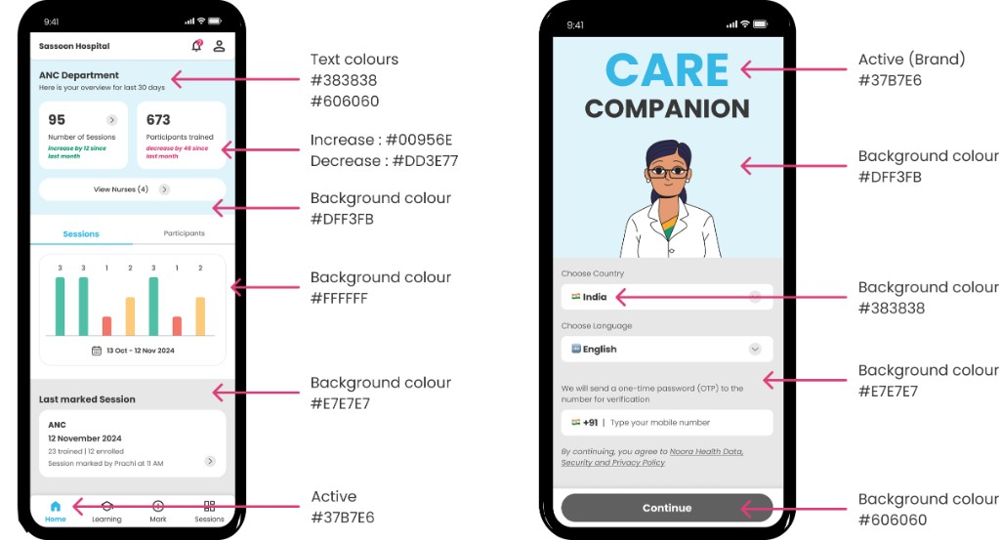
02.Typography
Why is a good typography important ?
Good typography improves readability, helping users quickly understand information and enhancing their experience. It also reflects a brand's personality, making it more trustworthy and engaging.
Consistency in typography creates a unified look across apps and websites. Using the same fonts and styles makes interfaces feel familiar and reinforces brand identity, improving recognition and connection.
Why is Poppins a good font ?
Poppins is a great font for several reasons:
Geometric Style: It's clean, open, and easy to read in both small and large sizes.
Variety of Weights: Poppins has 18 weights, making it suitable for headlines and body text.
Customizable: It has OpenType features like ligatures for unique text styles.
Clear and Spacious: The letterforms are easy to read with plenty of spacing.
Flexible: With nine weights, Poppins works for different design needs.
Multi-language Support: It supports both Latin and Devanagari writing systems.
Poppins
Poppins is a globally friendly sans-serif font that supports Latin and Devanagari scripts, making it ideal for worldwide projects. It's great for headlines, buttons, and small text, ensuring readability across all sizes.
Perfect for websites and apps, Poppins looks sharp on both large screens and mobile devices. It also offers unique typographic features, like creative letter combinations, while maintaining clarity across different browsers and devices.
Pros: Works with many scripts, easy to read, good for creative designs.
Cons: Not the best for very formal or traditional styles.
Ideal websites: It's great for global sites, apps, and projects that need to look modern and clear.
Font and details Noora Health use
All the text will fit in one of the below charateristics
Font Name: Poppins
Font style: Regular, Semibold, Bold
Exception: Regular Italic for overview tiles on homepage and toast messages
Font sizes: 12px, 14px, 16px
Exception: 24px for Numbers in the overview on homepage
Title: 16 px and Bold
Subtitle and highlights: 14 px and semibold
Body text: 12 px and regular (normal)
Line spacing: 140%
Text Colours
Title
#383838
Body
#606060
Support
#AFAFAF
Text style based on guidelines in use
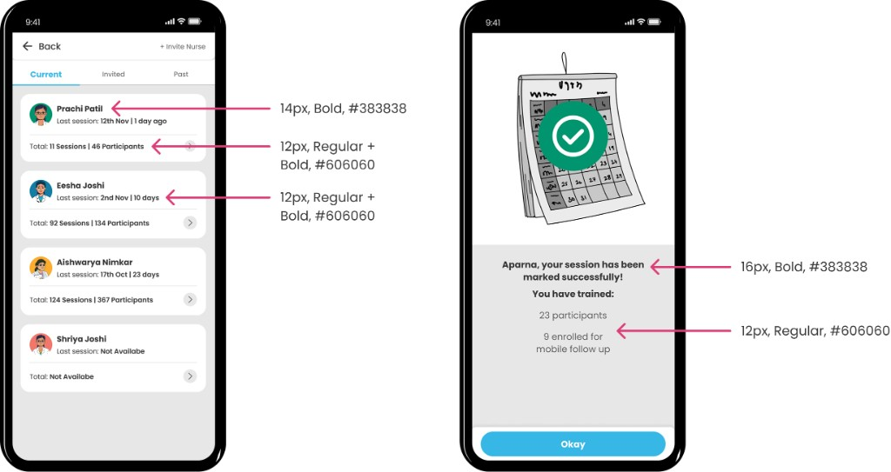
03.Spacing
What is spacing ? How does it help ?
Spacing is the empty area around text, images, and buttons, including margins, padding, and line spacing. It improves readability, reduces clutter, and highlights key elements.
Breathing space is the intentional use of empty space for a balanced, open design. It helps users focus and creates a clean, organized look.
Why is 8 point spacing grid good ?
The 8-point grid system is popular for its easy scalability across devices. Here's why:
Scales well: 8 scales smoothly across different screen sizes and pixel densities, avoiding awkward half-pixel offsets.
Easy to multiply: Multiples of 8 are simple to work with, and the numbers 4 and 8 provide consistent spacing steps.
Creates a harmonious rhythm: Using an 8-pixel increment creates a harmonious rhythm and alignment in your design.
Creates a visual hierarchy: Using multiples of 8 for dimensions, padding, and margins ensures a clean, rhythmic layout.
Most popular screen sizes are divisible by 8: Most popular screen sizes are divisible by 8, making them easy to fit.
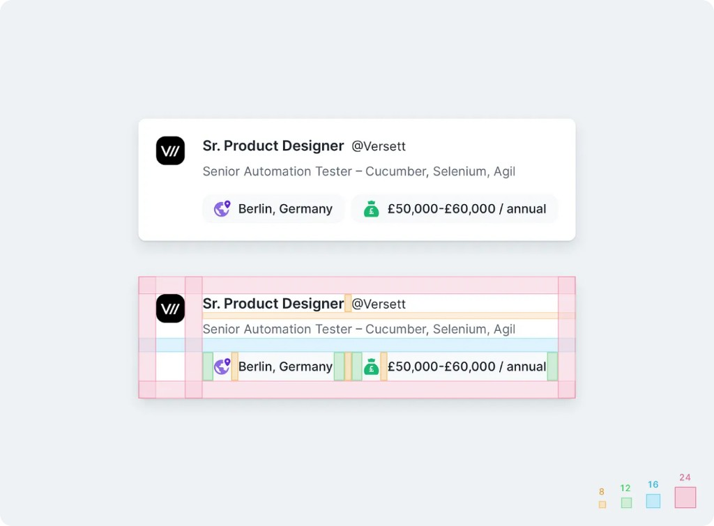
Spacing detail Noora Health uses
All the text will fit in one of the below charateristics
Spacings: in multiples of 8 (8,16,24 etc)
Exception: 4 incase utmost necessary for proximity
Margin: 16px
We will follow a 8 point (pixel) grid
The 8-point grid is a system used to create consistent and well-organized designs.
It works by ensuring that all elements (like text, buttons and icons) are spaced and sized in multiples of 8 (e.g., 8, 16, 24)
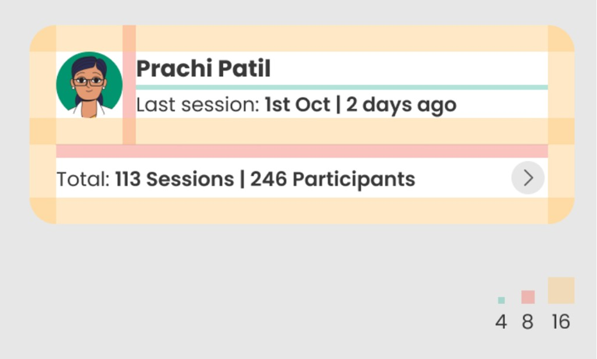
04.Input Fields
Why are input fields important ?
Consistency: Defined text fields create a uniform look and feel across the app, helping users know what to expect.
Usability: Clear text fields guide users on where to enter information, reducing confusion and improving interactions.
Efficiency: Defined text fields streamline development for faster implementation.
Error Prevention: Labels and validation messages help users input correct information.
Accessibility: Standardized fields improve usability for all, including those with disabilities.
Rounded vs. Sharp Corners
Effects on Design and Perception
- Ease of Processing: Rounded corners are easier for the brain to process, while sharp corners take more effort
- Design: Rounded corners focus attention on the center, while sharp corners can shift focus away from it. Rounded corners also help distinguish items in a grid.
- Safety: Sharp corners can be hazardous, so it's important to manage risks in the workplace.
- Maps and Charts: Rounded corners make it easier to follow lines and paths.
Meaning
- Rounded corners feel comfortable and casual.
- Sharp corners convey professionalism and seriousness.
- Example: A rounded "compose" button feels informal, while a sharp "send" button suggests permanence.
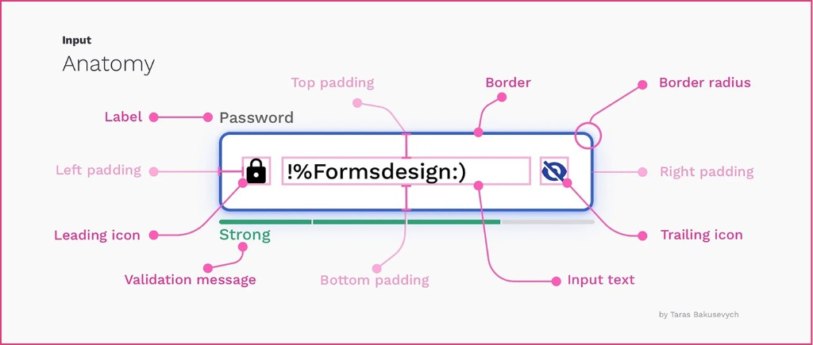
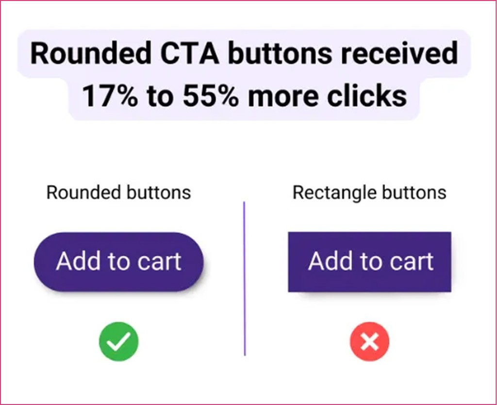
Noora Health's text input style
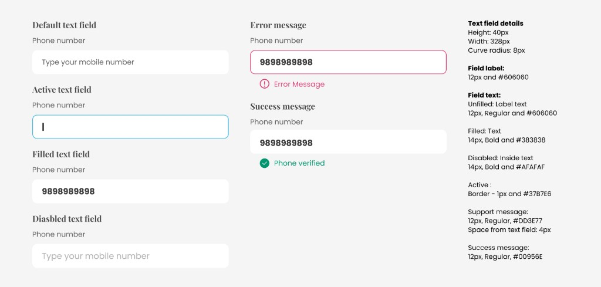
Noora Health's image input style
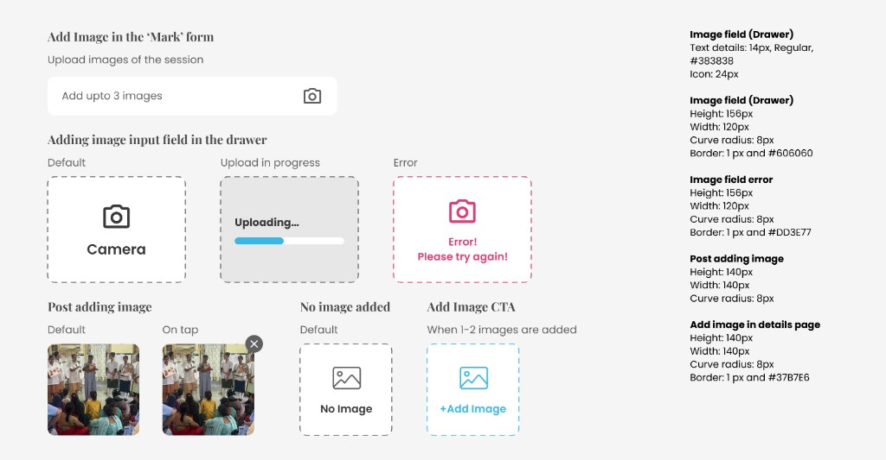
Input fields based on guidelines in use
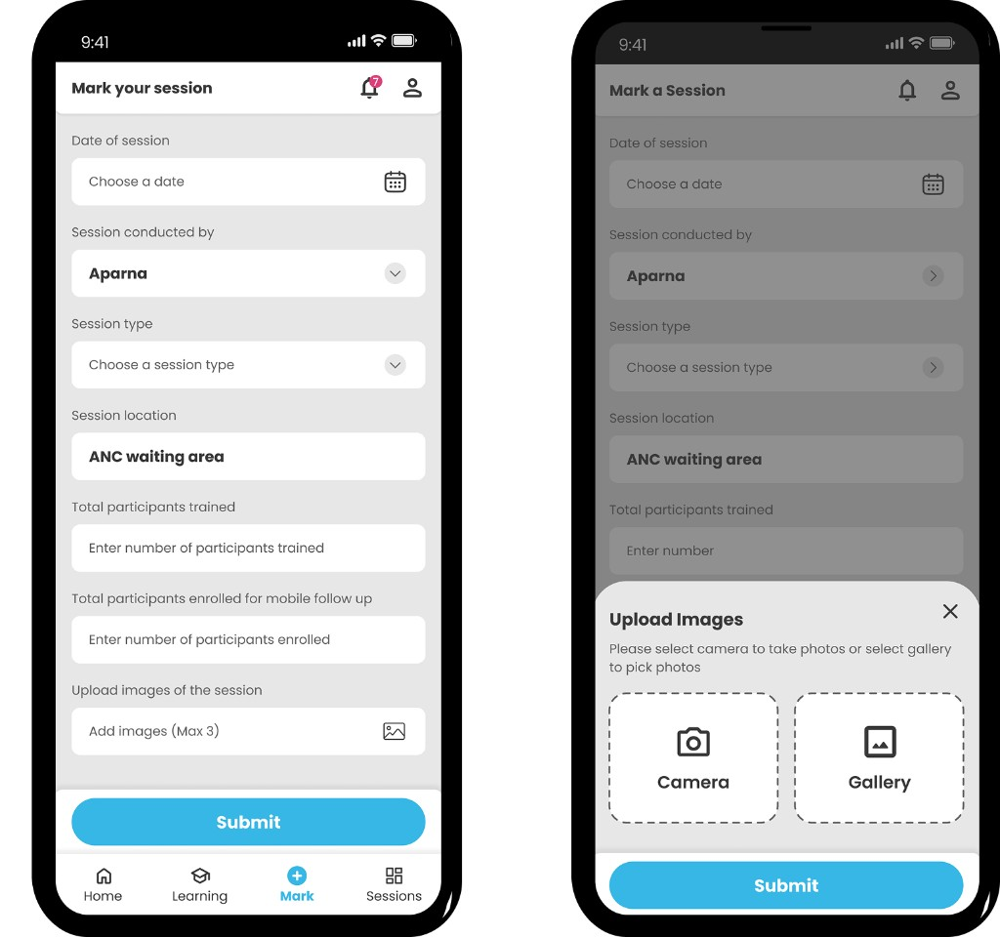
05.Icons
What makes an icon important ?
Quick Understanding: Instantly conveys ideas without reading text.
Space Efficiency: Icons take up less space than text, enabling cleaner layouts and allowing more content to fit in limited areas.
Universal Recognition: Breaks language barriers for wider accessibility
Improved Navigation: Enhances usability with intuitive design allowing users to navigate the app or website more easily.
How are icons to be designed ?
Icons should be at least 24 pixels for better clickability and readability. Here's why:
Accessibility: Icons smaller than 44 x 44 pixels can be difficult for some users to interact with, especially on mobile devices.
Legibility: Icons should be sized so that they can be read without magnification.
Clickability: According to Google, 24 x 24 pixels is the minimum size for an icon to be clickable.
Here are some other best practices for icon design:
- Maintain a 3:1 contrast ratio between the icon and its background.
- Avoid complex imagery.
- Use simple, yet bold icons to grab attention.
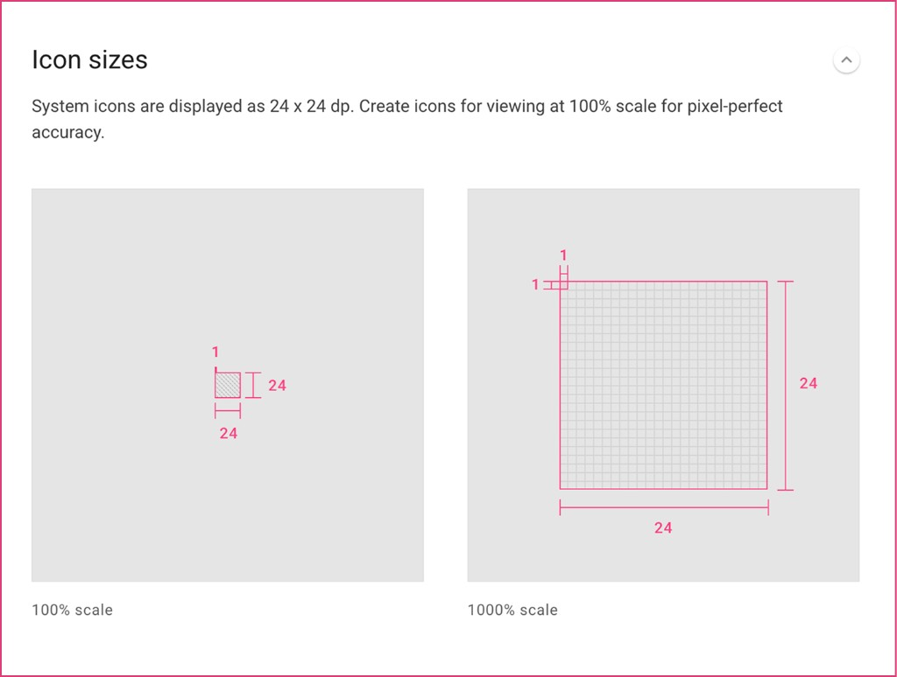
When designing an interface, it's important to be consistent with icon sizes. Common sizes are 16 pixels for small icons, 24 pixels for medium icons, and 32 pixels for larger icons.
Noora Health's Icon style
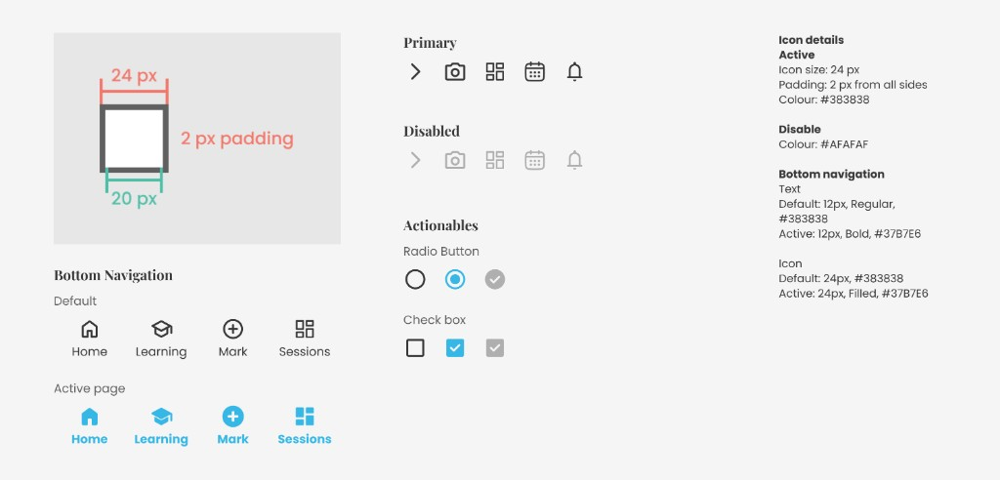
06.Illustrations
What makes an illustration important ?
Illustrations convey ideas, emotions, and complex concepts that words alone can't. They capture attention, simplify information, and enhance understanding.
They also evoke emotions, add personality, and create a universal visual language, making content more accessible and engaging.
How do customized illustrations help ?
An illustration is a visual representation or artwork created to accompany, explain, or enhance a concept, story, or idea.
Increased Relevance: Aligns with cultural identity, making content more relatable
Improved Engagement: Familiar elements enhance appeal and connection
More Effective Education: Tailored visuals boost understanding and retention
Stronger Emotional Appeal: Evokes pride, humor, and shared experiences
Cultural Sensitivity: Avoids offending local customs, reducing backlash
Better Communication: Familiar visuals clarify messages and prevent confusion
Higher Brand Recall: Localized designs enhance memorability and brand recognition
Noora Health's Customized Illustration style
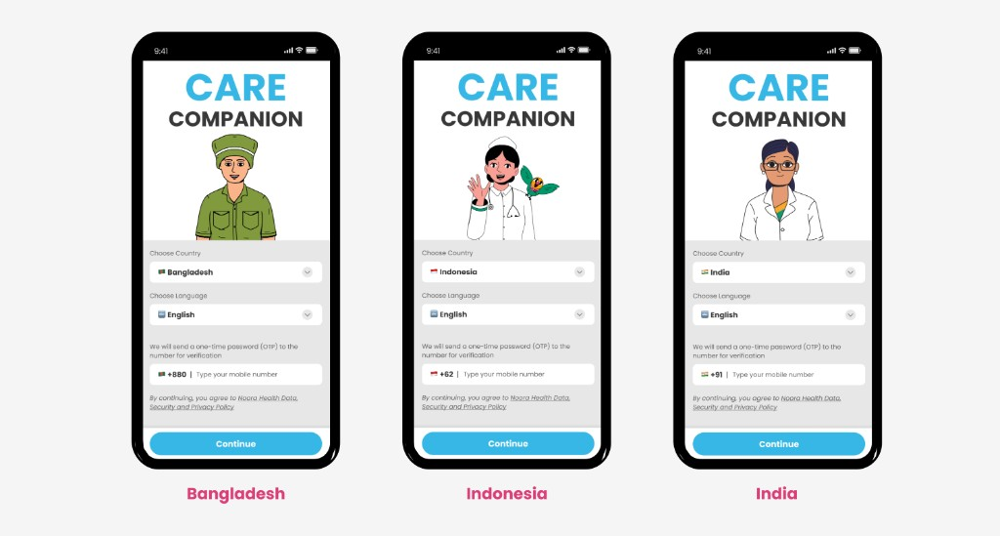
07.Buttons / CTAs
How do CTAs help users ?
Guide Actions: CTAs clearly indicate what users should do next, making navigation straightforward.
Enhance Engagement: Effective CTAs encourage users to interact with the content, leading to a more engaging experience.
Increase Clarity: They provide clear instructions, reducing confusion about what steps users need to take.
Boost Conversions: Well-placed CTAs can drive users to complete desired actions, like signing up or making a purchase, benefiting both users and the business.
What are the recommended CTA styles ?
Here are some tips for designing CTA buttons:
The recommended size for a mobile call-to-action (CTA) button is at least 44 pixels by 44 pixels, as recommended by Apple. This size is large enough to be easily seen and clicked, but not so large that it distracts from the content.
Button size standard: A study found that the optimal button size for users is between 42 and 72 pixels, with 60 pixels being the most preferred.
Text colour: Use dark text on a light-colored button, and light text on a dark-colored button.
Font: Use uppercase or capitalized letters to draw attention to the text. Sans serif fonts are often used for buttons because they are clear and easy to read.
Priority: When using multiple buttons, indicate priority so users know which actions will lead to the best result.
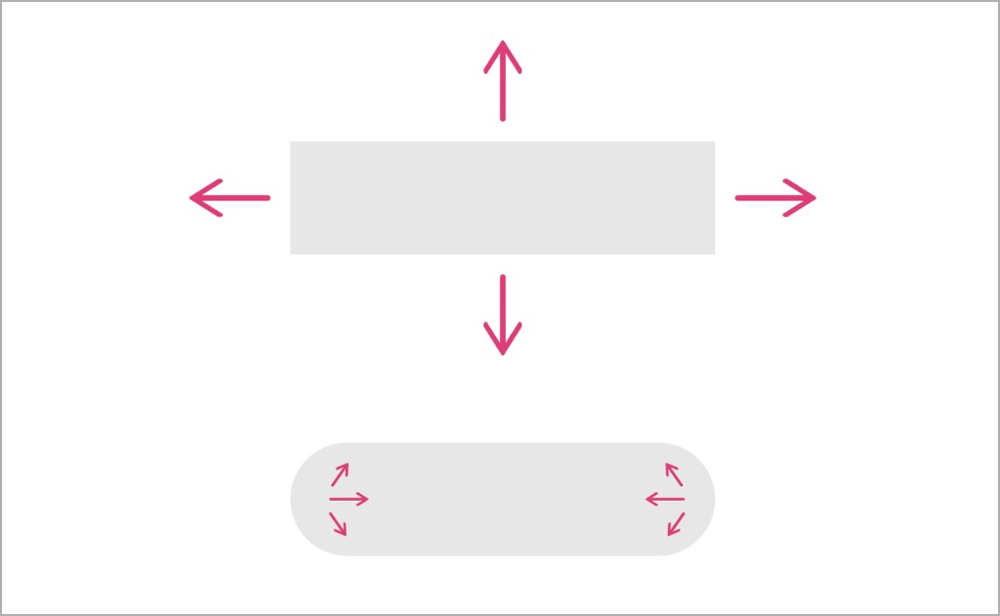
Noora Health's CTA style
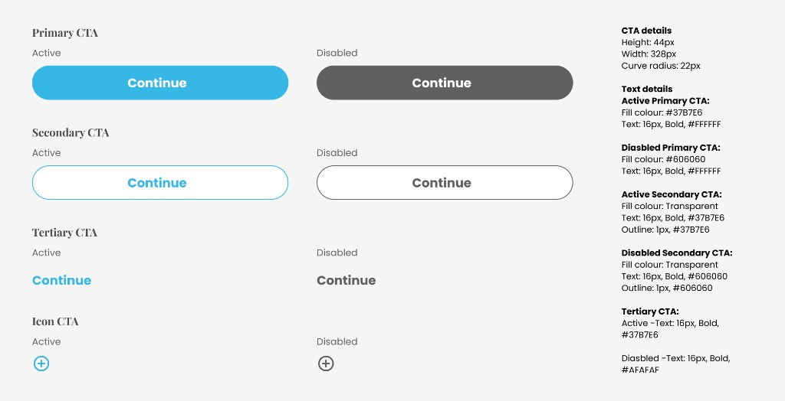
08.Pop-ups
What are they ? What difference do they make ?
What are Pop-ups?
Pop-ups are small windows that appear on top of a webpage or app interface. They can serve various purposes and help users in several ways
Types of Pop-ups
Pop-ups can include informational tips, alert notifications, subscription forms, promotional offers and feedback surveys.
How do they help users
Pop-ups provide guidance, facilitate quick actions, keep users informed about updates, engage them with relevant offers, and gather feedback to improve the overall experience
Pop ups and their usage
Here are some things to know about pop-ups:
Pop-ups are windows that appear on a website while a user is browsing, often without the user's intentional action. They can contain a variety of content, including marketing messages, notifications, errors, and more.
Appearance: Pop-ups can appear in different forms, such as a modal, welcome mat, banner, or smaller window.
Placement: Pop-ups should be visible but not intrusive, ensuring a smooth user experience
Placement: Pop-ups should be visible but not intrusive to maintain a good user experience
Design: Pop-ups can include images, color, and a call to action (CTA). The CTA should be clear, persuasive, and easy to find.
Triggering: Pop-ups can appear when a page loads, or when a user scrolls, clicks, or indicates they are about to close the page.
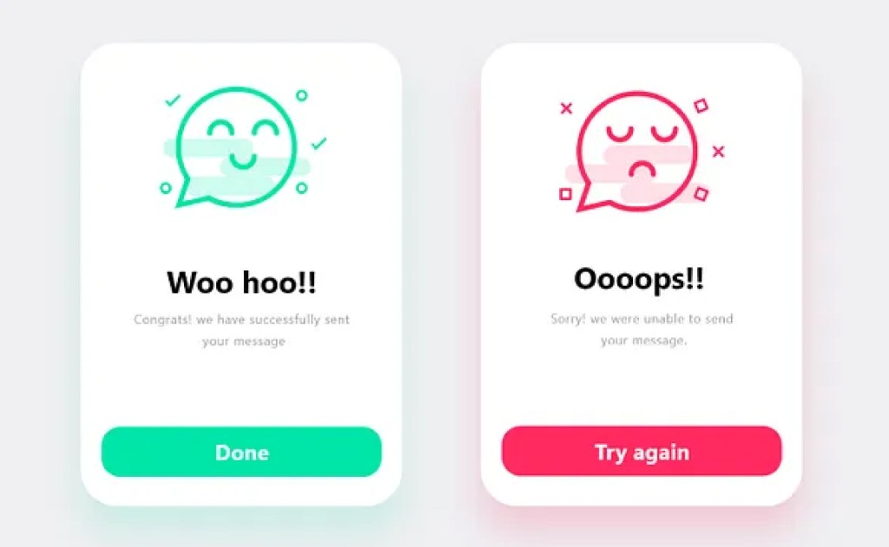
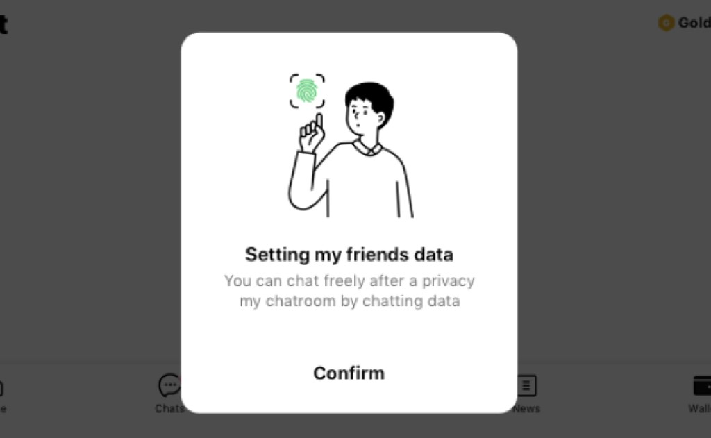
Noora Health's Pop-Up style
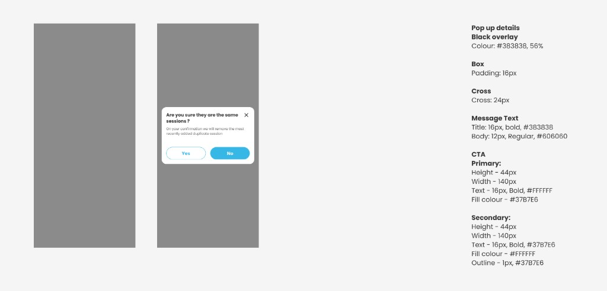
09.Drawers
Why are drawers necessary and useful ?
What are Drawers?
Drawers are UI components that slide in from the side (or sometimes from the bottom) of a screen, typically used to display additional navigation options or content without taking users away from their current view.
Why are they useful ?
Drawers keep the interface tidy by hiding less-used options, making navigation easier. They allow quick access to links and information without cluttering the main screen.
What are the recommended drawer styles ?
Here are some tips for designing drawer:
A drawer is a UI element that provides a side panel for navigation or extra content in a responsive web app. It's transient, opening for an action and closing after. Drawers can:
Maximize space: Keep interfaces uncluttered and efficient
Enhance UX: Maintain focus on content while enabling quick access to extras
Quick navigation: Enable fast transitions between sections
Trigger: Open by tapping the bottom app bar's menu icon
Configurations:
- Inline: Displayed within content.
- Overlay: Covers page content.
- Sidebar: Pushes content to the left.
Bottom navigation drawers: Modal drawers anchored to the screen's bottom, used with bottom app bars on mobile
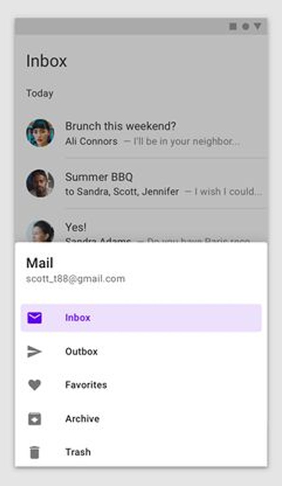
Noora Health's drawer style
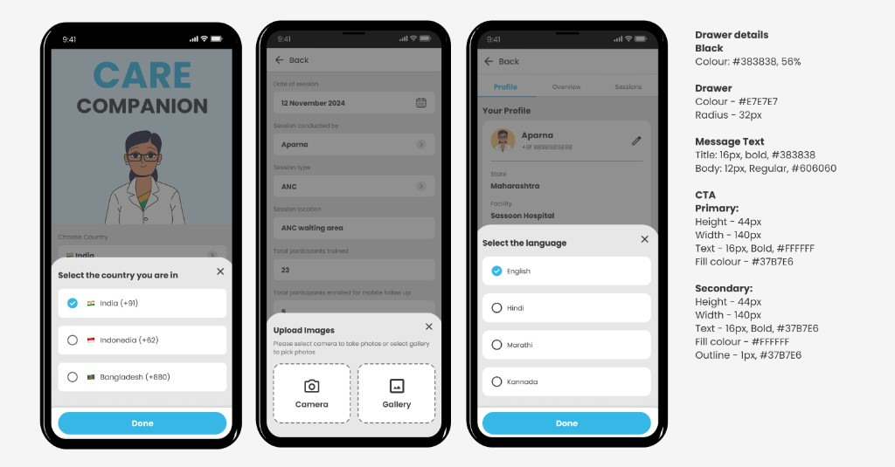
10.Toast Messages
What are they ? How are they useful ?
Toast messages are brief notifications that inform users about events like a success or an error. They appear temporarily and disappear on their own, requiring no user interaction.
They provide quick feedback without disrupting the experience. For example, after saving a file, a toast might say "Saved successfully", or if there's an error, "Failed to save." This keeps users informed without blocking actions.
Pop ups and their usage
Toast messages are important because they provide users with feedback without disrupting their experience:
Inform users: Show updates, messages, or action statuses.
Enhance engagement: Provide clear, timely feedback.
Prevent frustration: Ensure users get necessary feedback.
Stay non-intrusive: Allow interaction with the app while visible.
Save space: Compact and unobtrusive.
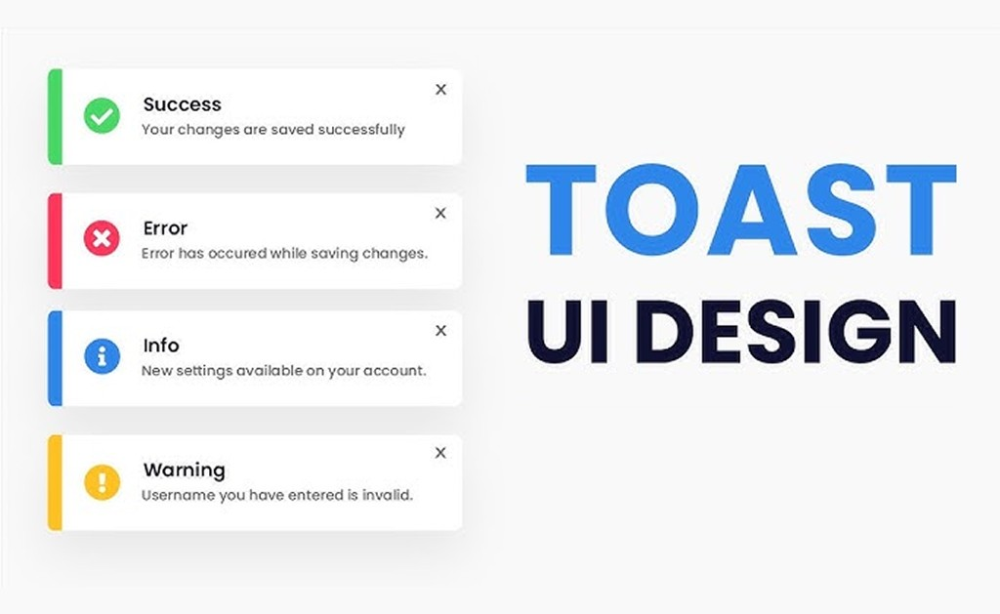
Noora Health's Toast Message style
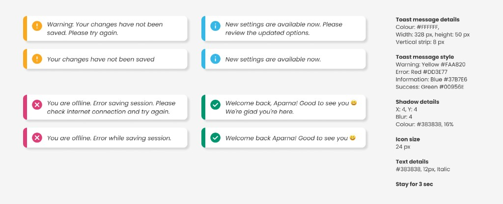
11.Tiles
What are they ? How are they useful ?
What are tiles and cards?
Tiles or cards are UI elements, usually rectangular or square, that display content like images, titles, and descriptions. They can also include interactive elements like buttons, links, or icons.
Why are they useful ?
They organize content in a clear, scannable format, improving readability and user experience. Their structured layout enhances interactivity, making them ideal for responsive and mobile-friendly designs.
What are the recommended drawer styles ?
Here are some tips for designing drawer:
In UI, tiles and cards are containers that hold content. Tiles are simple and foundational, while cards can be more complex.
Cards are built on the foundation of tiles and can have multiple actions, overflow menus, and selectable features.
Tiles are navigational UI elements, meaning they can only take a user to a destination of the hierarchy. If your usage requires an action to be triggered then use a card with a single button.
Tiles can be used standalone or as part of a collection.
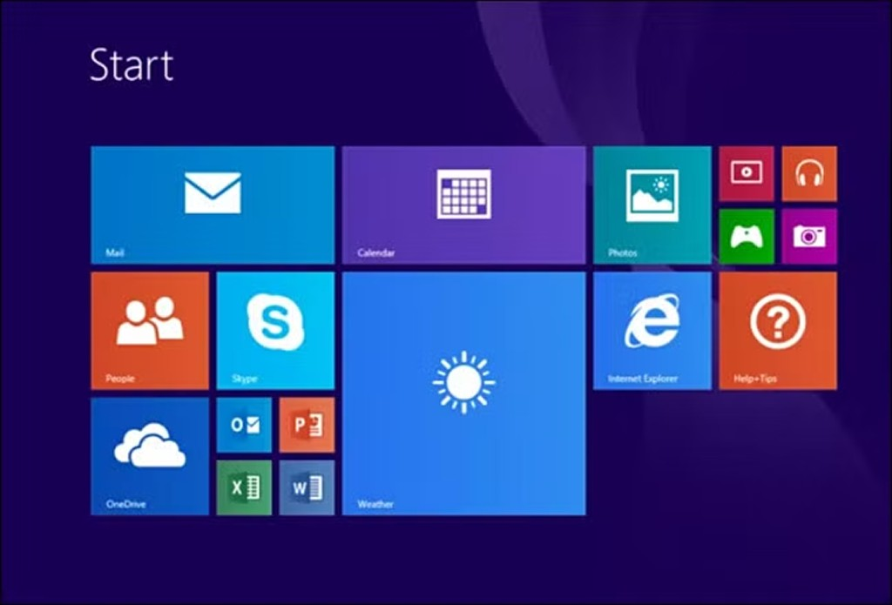
Noora Health's Tiles and Cards style
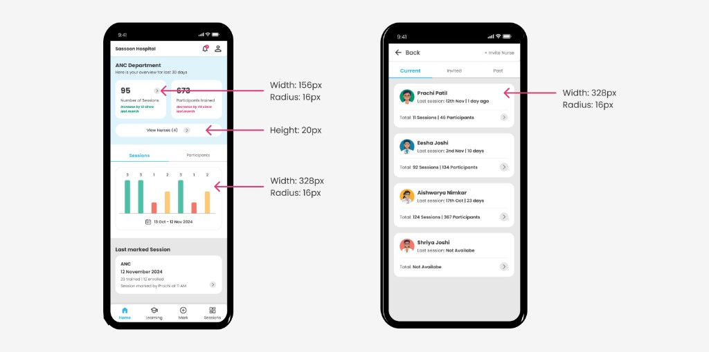
12.Tabs
How do tabs help the user ?
Tabs in a UI are clickable labels that allow users to switch between different sections or content within the same page. They help organize information into separate views, making navigation easier.
Tabs are useful because they keep the interface clean and allow users to quickly access different sections without leaving the page. This makes the experience faster and more organized.
Tabs and its usage
Tabs let users switch between content or tasks quickly. Common in browsers and apps, they can be horizontal, vertical, reordered, or stacked.
Elements: List (all tabs), Label (tab name), Panel (content area), and Selection Indicator (shows the active tab).
Types:
- Fixed Tabs – All tabs are visible at a fixed width.
- Scrollable Tabs – Some tabs remain hidden, requiring horizontal scrolling.
Tabs help organize content and save space but should be used only when beneficial.
Types of tabs:
- Fixed tabs: Display all tabs at once, each at a fixed width.
- Scrollable tabs: Show a subset of tabs, allowing horizontal scrolling.
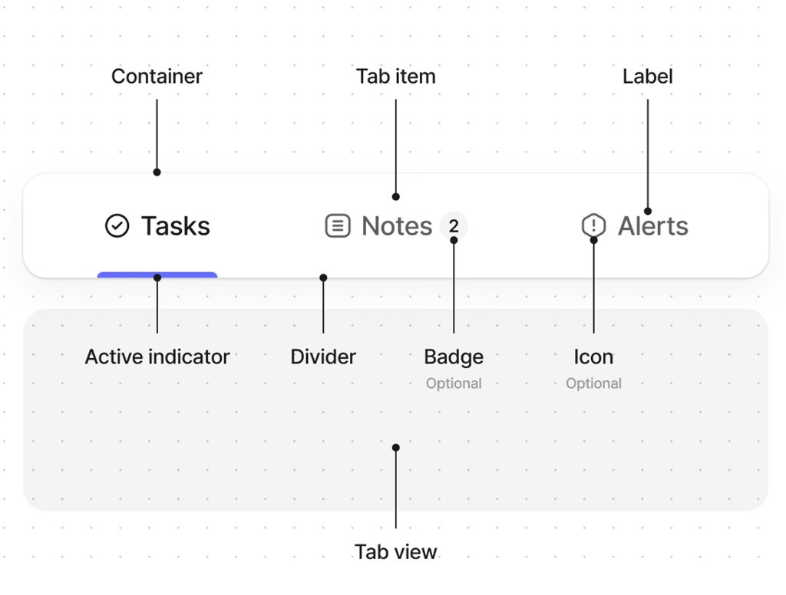
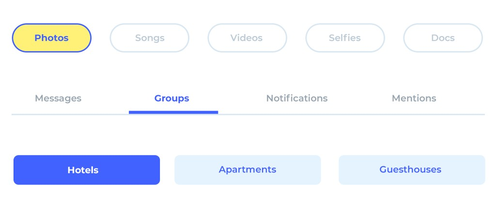
Noora Health's Tabs style
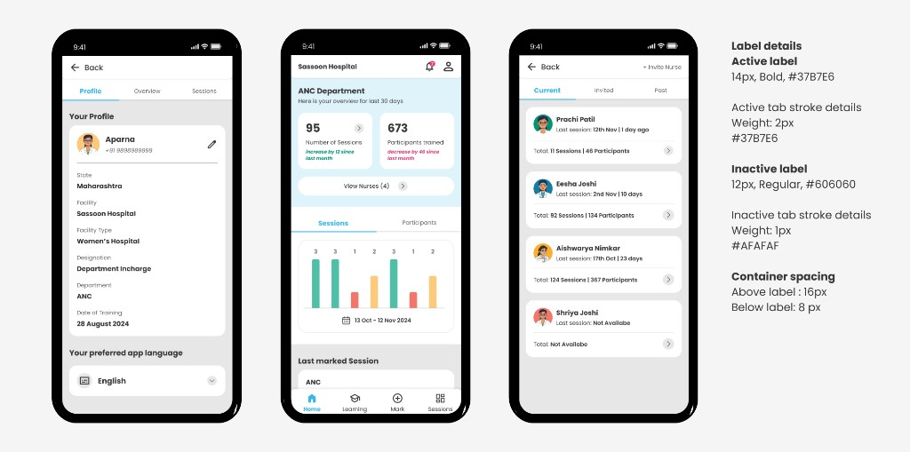
13.Languages
Why do we have multiple languages on our app ?
Our app operates in Nepal, India, Bangladesh, and Indonesia. In India, multiple states have different languages. To make the app more inclusive and help nurses conduct sessions in regional languages, we support multiple languages
Users can easily switch languages during login or in the profile section, ensuring a seamless and personalized experience for better accessibility and engagement
Design and Translation - Do's and Don'ts
Here are the guidelines to follow
| Title | Title |
|---|---|
| Design | While changing language, the font style remains the same (Font size, font weight, line height, colour) |
| The spacing should be the same for all the languages | |
| Illustrations remain the same for India. For Bangladesh and Indonesia, alternative illustrations to be used | |
| Language |
While translating, keep the following things in English:
|
Directly translating healthcare terms from English to Hindi can cause issues due to:
- Medical Terminology – Terms like "Hypertension" (उच्च रक्तचाप) and "Cardiologist" (हृदय रोग विशेषज्ञ) are complex and not widely understood.
- Lack of Standards – Terms like "ICU" have no widely accepted Hindi equivalent and are commonly used as आईसीयू.
- Loss of Clarity – "Blood Pressure" (रक्त चाप) may not be as intuitive as "BP".
- Space Constraints – Translations like "Emergency Room" (आपातकालीन कक्ष) are longer and may break UI layout.
- User Familiarity – Healthcare professionals prefer English terms like "Injection" over सुई लगाना.
- Context Differences – Words like "Check-up" (जांच) can have multiple meanings.
Noora Health's Multi-language interface
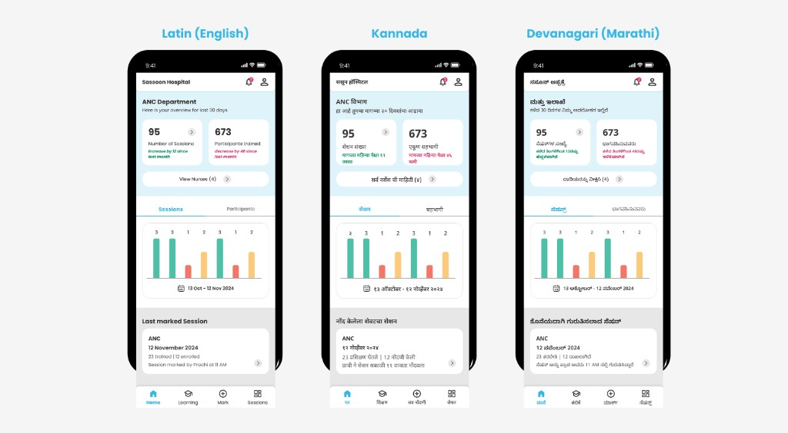
Conclusion
Our design system provides a unified set of guidelines, components and tools to create consistent, intuitive and accessible user experiences
By following these guidelines, we can work faster, stay aligned, and ensure everything looks and works great together.
Let's build better, together -
one design at a time!
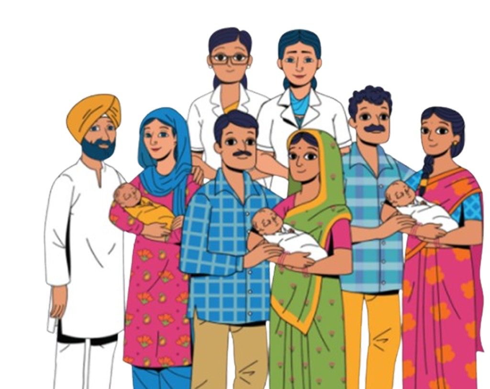